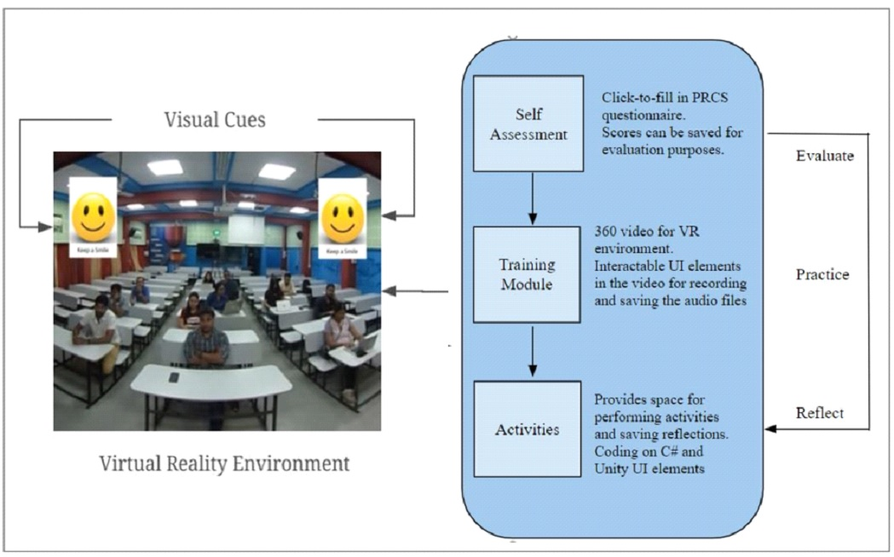
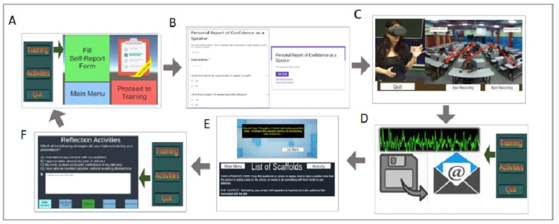
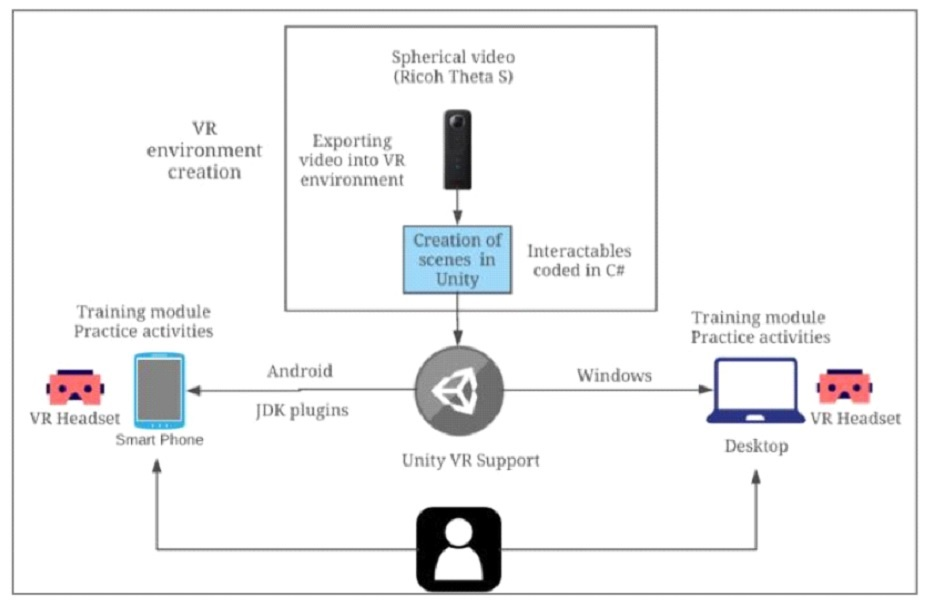

.png)

Speak Up is a virtual reality (VR)-based application, which enables individuals in improving their oral presentation skills. The application provides a self-regulated platform for learners to practice oral presentations with a realistic audience setting. The learners are exposed to different strategies for making an effective presentation followed by guided activities to improve on the learning outcome. Opportunities for feedback from experts, self-assessment and self-reflection exercises are some of the integral features of the training application. For further information, please visit the Learner's corner
To use the application, a learner would require the following resources.
The compatibility of VR headset with smart phone or desktop should be assessed to be able to use the application. The base application programming interface (API) of Unity VR ensures compatibility with multiple VR headsets mentioned above, and enables intuitive interaction with 360 videos. The application is also compatible with both Android and Windows.
The goal of Speak Up is to provide a self-regulated platform for learners to practice oral presentations with an audience, and perform some guided activities to improve on the learning outcome. To address the natural complexity of the world, in our VR environment, we focus on creating an environment closest to the real world scenario for oral presentations, showcasing live audience whose behavioural characteristics were supported by the literature.
Who can benefit from this application?
Anyone, including students, teachers and working professionals, who seek to improve their oral presentation skills can benefit from this application. The training fulfils the crucial need of exposing the speaker to real audience with guided practices and feedback.
What does a learner do during the training?
The learner starts with filling a personal report of confidence as a speaker, which provide a score on a scale of 0-15. This score becomes a measure of learner’s improvement in making oral presentations during the course of training interventions. Further, the learner delivers a 5-10 min presentation in the VR environment emulating the settings of a distracted audience, a commonly observed audience behaviour. The learner is exposed to specific strategies, such as engaging with the audience, using scaffolds embedded in the system. The learners also carry out guided activities such as filling out a self-report form, recording their presentations for critique and feedback, and performing reflection exercises during the training process.
What pedagogical strategies are incorporated for improved learning outcomes?
The training environment aims at promoting a context dependent and case-based
learning experience through a self-regulated training platform.
Opportunities for feedback from experts, self-assessment and self-reflection
exercises are some of the integral features of the training system (Fig. 1).
The situated learning environment and exploration of what works for a
particular learner, in context of making a presentation, strengthen the
training platform.

Figure 1: Functional blocks of the system including self-assessment, training module and activitiesWhat is the flow of activities in Speak Up ?
Our training solution emphasizes on knowledge building in learners through activities and the environment they are “situated” in. A comprehensive overview of the steps involved in the training intervention has been illustrated in Fig. 2.

Figure 2: Flow of activities in the Speak Up training interventionThe Speak Up application is still being refined, and thus not yet available online for use.
Cite as: Joshi A., Shah V. & Murthy S., "Speak Up: VR-based training system for improving oral presentation skills”, The Future of Learning Conference (FOL 2019) Bangalore, India, January 4-5, 2019.
Abstract:
Presenting to an audience is a well-established
way of articulating your ideas, work, research and projects. People who fear
public speaking are too scared to practice in front of real audience, and
avoid presentations altogether. Most people attempt to hone their skills
through demo-practicing without audience, reading listed suggestions for
making effective presentations, or in some cases going back to their
audio/video-recorded presentations. Some people also go through expensive
training programs and workshops to skill the art. However, there are not
many self-regulated training platforms for users to practice effective
presentation delivery. This is where VR plays a critical role. A wide
ranging research effort has been investigating the possibility of using
virtual reality exposure therapy to treat phobias of different kinds. In
this study, employing Unity platform and Google VR package, we present a
VR-based application (Speak Up) to enable anxious individuals in improving
their oral presentation skills. To accelerate the learning process, the
application provides a realistic audience-settings to recreate the
experience of delivering a real presentation, anywhere and any number of
times. The speaker delivers a presentation in the VR environment emulating
the settings of distracted audience, a commonly observed audience behaviour.
The learner is exposed to specific strategies, such as engaging with
audience, using scaffolds embedded in the system. Opportunities for feedback
from experts, self-assessment and self-reflection exercises are some of the
integral features of the training system. The situated learning environment
and exploration of what works for a particular user, in context of making a
presentation, makes the tool valuable. Anyone, including novice students or
experienced teachers and professionals, can benefit from such a platform,
which fulfils the crucial need of exposing the speaker to real audience with
guided practices to improve on their oral presentation skills.

Figure 1: VR application creation process and framework.Creation of the training platform: The training platform was designed in Unity, and the interactables were coded using C-Sharp language to imbibe appropriate functionality into elements encoded within the scenes (Fig. 1). The base application programming interface (API) of Unity VR ensures compatibility with multiple devices, and enables intuitive interaction with 360 videos, after building an application for a particular platform. Our application is compatible with both Android and Windows. The mobile application, which comprise the VR training module, is supported by various versions of Android operating system (version 4.4 to 8.0). The desktop version of the system is a stand-alone Unity application that works on Mac, Windows and Linux.
Application testing: Our application was tested on Redmi Note 5 Pro and Mi VR Play, which enables docking a smart-phone. MiVR Play can work without additional sensors, while smart phone devices are sufficiently powerful to support VR environment for videos at Ultra-High Definition (UHD; 3,840 × 2,160 pixels) resolution. Android Studio was used in conjunction with Unity to build an android application supplementing the desktop application, primarily for the activities (Fig. 1). Tizen is the library that replicates the desktop player movement functionality on the mobile (Android). However, the library is not used in the existing application since it is longer supported by the Unity Application.
Audio recording function: Users are also provided with an option of recording the audio of their oral presentation, which can be saved, and played back for self-evaluation or shared with experts for feedback. UnityEngine library has a microphone recording functionality called “Microphone” package. This was used to enable sound recording functionality in our application. We created functions that would start and stop recording when user clicked on the start and stop button, respectively. We also created a file path using the ‘Application package’ in UnityEngine library, and used persistentDataPath function. This enables user to see where the recorded file is saved (in a .wav format). The file can be emailed to the reviewer from the saved location. In addition, efforts are underway to imbibe the VR gaze functionality for recording and feature of directly emailing the audio file from the application itself.
Database creation for storing learner data: We used UnityEngine library’s “SeneManagement” and “PlayerPref” package to save the learners’ input (textual data like string and numbers) on activities module of our application. The saved user data is retrieved using GetString function in the “PlayerPref” package.